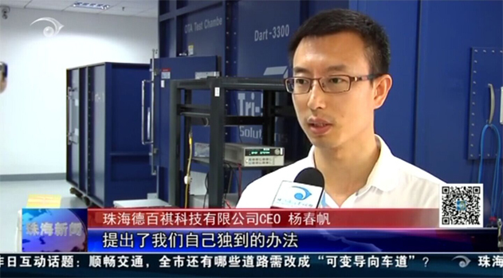

发布日期：2015-05
2015年5月，德百祺接受珠海电视台采访：德百祺，精准定位技术引领世界潮流。
查看全文珠海德百祺科技有限公司。这是一家研发推广精准定位技术的企业，目前产品已广泛销售到北美及东南亚市场。
2011年，几个有着黑莓公司背景的合伙人，在珠海成立一家小公司——德百祺科技有限公司。说它小，是因为直到现在也就40多个人，“蜗居”在南方软件园众多企业之中；另外，它的产品也只有遥控器大小，一般人还真不清楚它的奥妙。
其实，德百祺是一家极具高科技含量的公司，它从事的是移动通信平台软硬件以及移动互联网业务开发。简单地说，德百祺从事的是精准定位技术的研发和运用。卫星信号回到地面，大概只能精确到1米左右，进入亚米级，就需要专门的接受设备了。特别是在室内卫星信号达不到的情况下，德百祺的产品便派上了用场。
珠海德百祺科技有限公司CEO 杨春帆 我们的产品它定位的灵敏度 我们可以做到可以说是世界上最好的 相对来讲比其它产品至少有100倍这样的水平 另外我们的产品在质量和可靠性上 我们是下了功夫的
100倍差距，也就是说在同类产品已经接受不到信号的情况下，只要有1/00的微弱信号，就能被德百祺的定位器捕捉到。有了这样超强接受能力，实现精准定位便不在话下了。
精准定位技术可广泛应用于我们的日常生活中，超大型停车场找车、大型物流企业仓库配送都能派上用场，就算是一根针也能准确知道在哪儿。进入大型商业综合体，你可以轻松找到自己想去的店铺；如果你是漫无目的的闲逛，你所经过每家店铺打折优惠信息可实现实时推送。
德百祺还是国家重大科研专项“羲和计划”的参与者，这是一项依靠北斗技术所衍生的庞大课题。德百祺正在室内外1米无缝连接定位上进行研究。
珠海德百祺科技有限公司CEO 杨春帆 我们也是响应国家的号召 我们在“羲和计划”这一方面 室内外无缝1米定位这一块 提出了我们自己独到的办法 我们现在研发的产品 不光是在国内在世界上来说 也可以说是第一个来尝试
目前，德百祺定位产品已在国内多个省份销售，并计划与国内大型电商、租车公司进行合作。“北斗”卫星在东南亚领域的高精度，也使德百祺在东南亚各国广受欢迎，目前正在与印尼当地通讯运营商商谈10万台车的大单；另外由于德百祺产品的多模技术，可实现在北斗、GPS等各导航系统中自由切换，北美市场美国和加拿大已有3000多辆车使用。
珠海台记者陈庆顺报道。